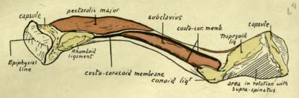
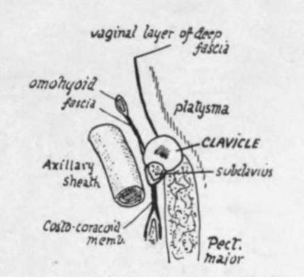
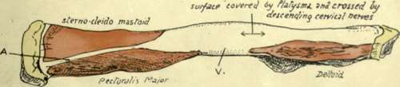

Upper Limb. Part 3
Description
This section is from the book "The Anatomy Of The Human Skeleton", by J. Ernest Frazer. Also available from Amazon: The anatomy of the human skeleton.
Upper Limb. Part 3
The suprascapular artery runs out behind the bone, held to it by the omohyoid fascia, and it gives off here the small nutrient artery which pierces the bone behind and below, running in an outward direction : the foramen may not always be present or it may be double. It is worth remarking that there is always an artery running behind the bone and derived from the thyroid axis, but it does not always reach the scapula : in this case the effective suprascapular artery arises from the third part of the subclavian artery, runs out more or less in company with the nerve, and passes with it under the suprascapular ligament.
The morphological value of the clavicle is uncertain. It has been customary to look on it as a bone that has been secondarily added to the pectoral arch, of which it is not really a constituent, in the sense that it does not represent one of the ventral segments of that arch already shortly described.
Fig. 53.-Lower surface of left clavicle. The various areas and ridges can be found at once on the bone Observe that Pectoralis major is in close relation with the rhomboid ligament and costo-coracoid membrane covering Subclavius. The outer part of Subclavius, however is separated from Deltoid by an interval filled with soft tissue, to allow of the play of the latter muscle in movements of the arm. The costo-coracoid membrane reaches the chest-wall and Pectoralis minor by passing down the rhomboid ligament, while its outer part reaches the muscle by passing down the conoid ligament to the coracoid process. To understand the relation between Supraspinatus and the area behind the trapezoid ridge, see Fig. 51.
Fig. 53A.-A scheme of a section through the clavicle to show the different planes which come into relation with the bone. The descending cervical nerves cross it deep to the Platysma, the suprascapular vessels run behind it in the attachment of the omohyoid fascia, and the Sterno-mastoid and Trapezius are in the plane of the vaginal fascia.
Fig. 54.-Left clavicle seen from the front. A is the blunt edge which lies between the areas for Sterno-mastoid and Pectoralis major ; the presence of two large muscular surfaces gives the inner third of the bone a somewhat prismatic shape on section, moulded on the original cylindrical shape of the shaft. V indicates the interval between Pect. major and Deltoid areas, on which there may be a vein joining the cephalic and external jugular ; this is, in the embryo, one of the main venous channels which drain the limb-bud.
On the other hand, it has been held that the bone is really the much modified anterior ventral bar, corresponding with the precoracoid in the simple type of arch, and in support of this it can be shown that there is a cartilaginous structure in the anlage of the bone immediately preceding its ossification. Possibly the bone does not correspond with the " clavicles " that are found in some lower animals. Ornithorhynchus is the only mammal that possesses coracoid bars that reach the sternum, and if its " clavicle " is morphologically a separate bone it exists with a coracoid and a precoracoid-that is, if the epicoracoid of this animal represents the precoracoid of the simple type. It is possible that the human clavicle is partly a covering dermal bone, and partly a primary ventral bar which has been taken into the covering bone and is represented by the included cartilaginous core in the ossifying structure.
The thick compact bone of the shaft wall thins away toward the ends. The association with longitudinal pressure, due to the pull of muscles going from the trunk to the arm, is indicated by the well-marked longitudinal lamellae in the cancellous tissue.
The clavicle is well developed in mammals in which the fore limbs are used for purposes beyond the mere to-and-fro movements of progression : thus functions that call for lateral motions in the limb require a clavicle to support the scapula.
This is seen in birds as well as mammals, for the flying birds have strong clavicles firmly articulated with the sternum, whereas the cursorial birds have only rudimentary bones.
Among mammals it is well developed in those that use their front limbs for prehension, as among the monkeys or the rodents, while animals like the horse and carnivora have none or only rudimentary suggestions of the bone embedded in the muscles of the shoulder.
Development
At the end of the first month the bone is represented by a mesenchymal condensation lying obliquely below the future acromial region of the scapula, which is placed in the neck. In the fifth to sixth week a couple of centres of ossification appear in the rod of condensation, which is now in a peculiar condition of " pre-cartilage." The two centres seem to indicate the development of the shaft of the bone in two parts, and are preceded by the pre-cartilaginous change occurring also in two separate areas. In the seventh week the two areas and the two centres are continuous, and from now on the spreading ossification is preceded by cartilaginous changes in the mesenchyme.
As a rule only one epiphysis develops, and this only forms a thin disc of articular surface (Fig. 55) at the inner end. The small size of this epiphyseal plate can be understood when it is stated that its centre occurs very late, about the twentieth year, when the bone is nearly fully grown, and fuses very quickly. On the other hand, the centres for the shaft are the earliest centres to appear in the body.
Continue to:
- prev: Upper Limb. Part 2
- Table of Contents
- next: Scapula